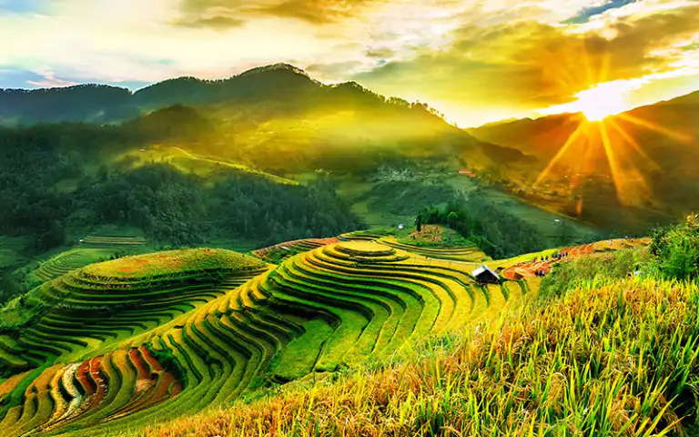

Giới Thiệu Du Lịch Yên Bái
Yên Bái là tỉnh miền núi nằm sâu trong nội địa, là 1 trong 13 tỉnh vùng núi phía Bắc, nằm giữa 2 vùng Đông Bắc và Tây Bắc. Phía Bắc giáp tỉnh Lào Cai, phía Nam giáp tỉnh Phú Thọ, phía Đông giáp 2 tỉnh Hà Giang, Tuyên Quang và phía Tây giáp tỉnh Sơn La. Yên Bái có 9 đơn vị hành chính (1 thành phố, 1 thị xã và 7 huyện) với tổng số 180 xã, phường, thị trấn (159 xã và 21 phường, thị trấn); trong đó có 70 xã vùng cao và 62 xã đặc biệt khó khăn được đầu tư theo các chương trình phát triển kinh tế - xã hội của Nhà nước, có 2 huyện vùng cao Trạm Tấu, Mù Cang Chải (đồng bào Mông chiếm trên 80%) nằm trong 61 huyện nghèo, đặc biệt khó khăn của cả nước.. Yên Bái là đầu mối và trung độ của các tuyến giao thông đường bộ, đường sắt, đường thuỷ từ Hải Phòng, Hà Nội lên cửa khẩu Lào Cai, là một lợi thế trong việc giao lưu với các tỉnh bạn, với các thị trường lớn trong và ngoài nước.
Nhắc đến Yên Bái là nhắc đến Mù Cang Chải.Ruộng bậc thang Mù Cang Chải là một trong những điểm đến không thể bỏ qua khi ghé thăm Yên Bái. Nằm ở huyện Mù Cang Chải, ruộng bậc thang này được UNESCO công nhận là Di sản Văn hóa Thế giới. Với những thửa ruộng bậc thang vàng óng trải dài tít tắp, Mù Cang Chải mang đến vẻ đẹp hoang sơ, hùng vĩ của vùng cao nguyên Tây Bắc.Ruộng bậc thang Mù Cang Chải là một trong những điểm đến hấp dẫn và nổi tiếng của tỉnh Yên Bái, Việt Nam. Được xem là một tác phẩm nghệ thuật của con người và thiên nhiên, ruộng bậc thang Mù Cang Chải đã thu hút hàng nghìn du khách đến thưởng ngoạn và khám phá vẻ đẹp hoang sơ, thanh bình của vùng nông thôn miền núi. Với diện tích rộng khoảng 2.200ha, ruộng bậc thang Mù Cang Chải nằm trên địa hình đồi núi với độ cao từ 700 – 1.000m so với mặt nước biển. Thời gian lý tưởng để đến tham quan ruộng bậc thang này là vào mùa lúa chín, khoảng từ tháng 9 đến tháng 10 hàng năm. Lúc này, những cánh đồng lúa chín vàng rực rỡ tạo nên một bức tranh thơ mộng, lãng mạn và hấp dẫn đối với bất kỳ ai khi đặt chân đến đây.Nhìn từ trên cao xuống, ruộng bậc thang Mù Cang Chải trông giống như một bức tranh sơn thủy hữu tình với những hàng lúa chín vàng óng, xen lẫn với những mảng đất đỏ màu của chiếc cầu rơm và làng quê nằm dưới chân núi. Các bậc thang được xây dựng đối xứng và song song với nhau, tạo nên một cảnh quan vô cùng hài hòa và tuyệt đẹp. Không chỉ là một khu vực nông nghiệp, ruộng bậc thang Mù Cang Chải còn là nhà của các dân tộc thiểu số đặc biệt như H’mong, Dao… Điều này đã tạo nên một văn hóa phong phú và đa dạng ở đây. Du khách khi đến đây có thể tham quan, trải nghiệm cuộc sống của các dân tộc bản địa, cùng thưởng thức những món ăn truyền thống địa phương và được nghe những câu chuyện lịch sử, truyền thuyết về vùng đất này cũng đủ để bạn tìm hiểu xem Yên Bái ở đâu mà đặc biệt đến thế!

Mỗi năm, vào tháng 9 và tháng 10 âm lịch, khi ruộng bậc thang Mù Cang Chải chuyển màu từ màu xanh sang màu vàng óng, du khách có cơ hội tham gia Festival Ruộng bậc thang Mù Cang Chải. Đây là một hoạt động văn hóa truyền thống được tổ chức để tôn vinh công lao của người dân và góp phần bảo tồn di sản văn hóa quốc gia.Ngoài ra, cần theo dõi thời tiết, lựa chọn phương tiện hợp lý phù hợp với sức khỏe để có một chuyến đi tuyệt vời nhất. Ngoài thiên nhiên hùng vĩ, thơ mộng, con người Mù Cang Chải cũng hiền hậu và dễ mến. Khi được hỏi về điều tạo nên ấn tượng về mảnh đất và con người nơi đây, anh Hoàng Điệp hào hứng cho biết: "Cảnh tượng thiên nhiên hùng vĩ, sức sống mạnh mẽ của con người nơi đây khi cải tạo thiên nhiên. Cùng tính tình hiền hòa đôn hậu của người dân ở đây là những thứ để lại ấn tượng sâu sắc. Ngoài ra còn có những cung đường đi vào các thửa ruộng là một trải nghiệm đáng nhớ. Tụi mình vừa chạy vừa trượt dốc đúng nghĩa khi đến mâm xôi lớn. Các em bé người dân tộc ở đây cũng rất dễ thương và dễ mến. Mình có tiếp xúc với nhiều người dân ở đây và nhận được sự giúp đỡ rất nhiệt tình từ họ. Còn về ẩm thực, mình là fan món măng chua ngâm dấm. Đi về còn không quên mua theo về làm quà".

Ngoài ra, vùng đất này còn là nơi tập trung của các nền văn hóa dân tộc đặc biệt, trong đó có H’Mông. Không khó để bạn có thể bắt gặp những khung cảnh các em bé H’Mông rạng rỡ trong chiếc váy đầy đủ sắc màu. Những em ấy lúc nào cũng rạng rỡ nụ cười trên môi, vô cùng thân thiện với các tín đồ du lịch. Bên cạnh đó, Mù Cang Chải còn nổi bật với không gian lộng lẫy của mùa vàng vào tháng 9. Vào thời điểm này, các thửa lúa ở Đồi mâm xôi La Pán Tẩn bắt đầu khoe sắc rạng rỡ với tone vàng nổi bật. Các tín đồ du lịch, photographer hay travel blogger sẽ tới đây khá nhiều vào thời điểm này, tạo nên một bức tranh phong cảnh nhộn nhịp và đầy sức sống. Du lịch Mù Cang Chải còn được các bạn trẻ biết đến với phong cách đặc sắc. Các đặc sản như nếp Tú Lệ, mận tam hoa bao giờ cũng được nhiều tín đồ du lịch săn đón khi ghé thăm vùng đất xinh đẹp này.Mù Cang Chải luôn nổi tiếng với các điểm checkin tuyệt vời như đồi mâm xôi ở xã La Pán Tẩn, đồi móng ngựa Sáng Nhù ở thị trấn Mù Cang Chải hay đèo Khau Phạ, thì nay, các nhiếp ảnh gia và du khách còn vô cùng thích thú khi được khám phá thêm rất nhiều địa điểm mới lạ hơn như: rừng trúc, đồi thông, hay các điểm du lịch cộng đồng mang đậm bản sắc văn hóa dân tộc Mông; là những điểm chụp ảnh ruộng bậc thang ấn tượng ở bản Háu Đề, xã La Pán Tẩn; là sống khủng long ở bản Phình Hồ, xã Dế Xu Phình; vân gỗ ở xã Lao Chải hay võng lúa ở bản Háng Bla Ha A, xã Khao Mang… Vào mùa, Mù Cang Chải đón hàng ngàn du khách đến khám phá, chiêm ngưỡng kiệt tác thiên nhiên từ bàn tay con người giữa biển vàng bao la và hương sắc mùa thu hoạch thanh bình, quyến rũ. Nằm trong vùng xanh, những sóng vàng xứ Mù Cang đã thực sự hòa trong cuộc sống bình thường mới cùng du khách nội tỉnh, đồng thời chuẩn bị tâm thế tốt nhất để đón du khách trong nước và quốc tế khi việc tiêm vắc-xin đảm bảo miễn dịch cộng đồng. Mù Cang Chải vẫn sẵn sàng đón chào du khách và luôn giữ vững là điểm đến "Bản sắc, an toàn, thân thiện”.